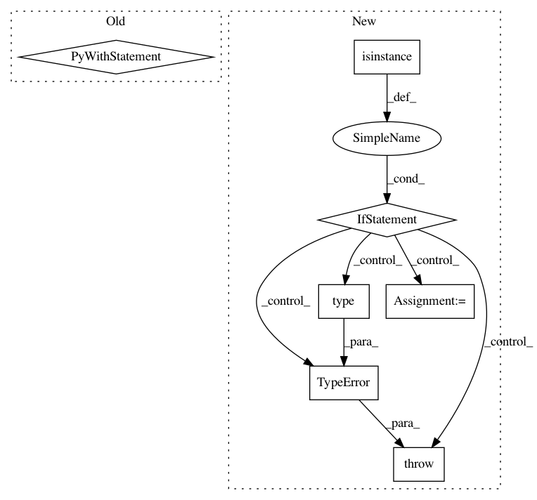

6701f27afa62712b34a17d4b0ff879156b0c7937,keras_preprocessing/image/utils.py,,load_img,#Any#Any#Any#Any#Any#Any#,75
Before Change
if pil_image is None:
raise ImportError("Could not import PIL.Image. "
"The use of `load_img` requires PIL.")
with open(path, "rb") as f:
img = pil_image.open(io.BytesIO(f.read()))
if color_mode == "grayscale":
// if image is not already an 8-bit, 16-bit or 32-bit grayscale image
// convert it to an 8-bit grayscale image.
if img.mode not in ("L", "I;16", "I"):
img = img.convert("L")
elif color_mode == "rgba":
if img.mode != "RGBA":
img = img.convert("RGBA")
elif color_mode == "rgb":
if img.mode != "RGB":
img = img.convert("RGB")
else:
raise ValueError("color_mode must be "grayscale", "rgb", or "rgba"")
if target_size is not None:
width_height_tuple = (target_size[1], target_size[0])
if img.size != width_height_tuple:
if interpolation not in _PIL_INTERPOLATION_METHODS:
raise ValueError(
"Invalid interpolation method {} specified. Supported "
"methods are {}".format(
interpolation,
", ".join(_PIL_INTERPOLATION_METHODS.keys())))
resample = _PIL_INTERPOLATION_METHODS[interpolation]
if keep_aspect_ratio:
width, height = img.size
target_width, target_height = width_height_tuple
crop_height = (width * target_height) // target_width
crop_width = (height * target_width) // target_height
// Set back to input height / width
// if crop_height / crop_width is not smaller.
crop_height = min(height, crop_height)
crop_width = min(width, crop_width)
crop_box_hstart = (height - crop_height) // 2
crop_box_wstart = (width - crop_width) // 2
crop_box_wend = crop_box_wstart + crop_width
crop_box_hend = crop_box_hstart + crop_height
crop_box = [crop_box_wstart, crop_box_hstart,
crop_box_wend, crop_box_hend]
img = img.resize(width_height_tuple, resample,
box=crop_box)
else:
img = img.resize(width_height_tuple, resample)
return img
def list_pictures(directory, ext=("jpg", "jpeg", "bmp", "png", "ppm", "tif",
"tiff")):
Lists all pictures in a directory, including all subdirectories.
After Change
if pil_image is None:
raise ImportError("Could not import PIL.Image. "
"The use of `load_img` requires PIL.")
if isinstance(path, io.BytesIO):
img = pil_image.open(path)
elif isinstance(path, (Path, bytes, str)):
if isinstance(path, Path):
path = str(path.resolve())
with open(path, "rb") as f:
img = pil_image.open(io.BytesIO(f.read()))
else:
raise TypeError("path should be path-like or io.BytesIO"
", not {}".format(type(path)))
if color_mode == "grayscale":
// if image is not already an 8-bit, 16-bit or 32-bit grayscale image
// convert it to an 8-bit grayscale image.
if img.mode not in ("L", "I;16", "I"):
In pattern: SUPERPATTERN
Frequency: 3
Non-data size: 7
Instances
Project Name: keras-team/keras-preprocessing
Commit Name: 6701f27afa62712b34a17d4b0ff879156b0c7937
Time: 2021-02-04
Author: muller79924@gmail.com
File Name: keras_preprocessing/image/utils.py
Class Name:
Method Name: load_img
Project Name: Cadene/bootstrap.pytorch
Commit Name: 5d5209a072c84408e0856e2a1b6c193a439920de
Time: 2019-09-09
Author: mcoaky@gmail.com
File Name: bootstrap/lib/options.py
Class Name: Options
Method Name: load_yaml_opts
Project Name: dmlc/gluon-nlp
Commit Name: a947d66d28baaae1302363556a8a18b04fa6aa40
Time: 2018-08-16
Author: leonard@lausen.nl
File Name: gluonnlp/embedding/evaluation.py
Class Name: ThreeCosMul
Method Name: __init__